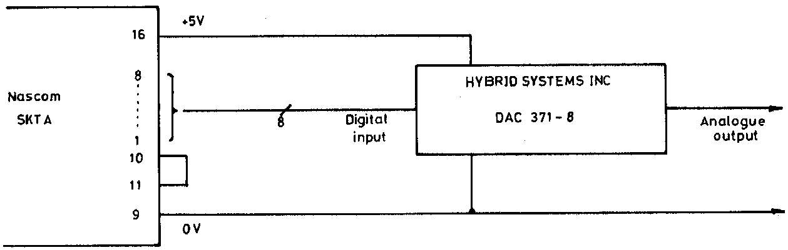

INMC 80 News |
June/July/August 1980 · Issue 1 |
| Page 24 of 48 |
|---|
I must confess that for a long time I regarded the PIO as ‘just the third 40 pin chip on the Nascom board’, but one day I would get round to using it for some application.
Then INMC News, issue 2 arrived, containing a very useful article on the PIO. This gave practical tips & facts not covered in the PIO Handbook. The article concluded with a request, nay more of a plea, for members to describe their applications of the PIO.
Armed with all this information I set about making a Digital to Analogue Interface using a Digital – Analogue Convertor (DAC) I bought at the Longleat (Amateur Radio) Mobile Rally.
No program was written, because using the T4 Output command port A could be set up for mode 0 and no interrupt, and data written to the DAC. The long term aim is to attempt to write a Music Program, directly synthesizing music waveforms or using the analogue signal to control a voltage controlled oscillator.
For reference, the address of the supplier of the writer’s DAC is LB Electronics., __ _________, Hayes, Middlesex. The writer has no information regarding current price and availability.
Some time after, Graham Clarke’s Space Invasion game was obtained from the Software Library. I will certainly recommend this game to every one, it is most entertaining and very addictive. I won’t describe the game, so play it to find out! The software uses the A, X and Z keys to input information to the Nascom from the operator. The KBD subroutine detects the action of a key-depression but provides no information if the key is kept depressed. In the Space Invasion game the effect was making the software slow to respond to operator commands. The Hardware and Software described below overcomes many of the problems.
Three push button switches were mounted in a 4″ x 4″ x 1.5″ plastic box and was connected to the Nascom by a multicore cable. This made a hand-held control box, which was easier to use than finding the correct keys on the keyboard.
| Page 24 of 48 |
|---|